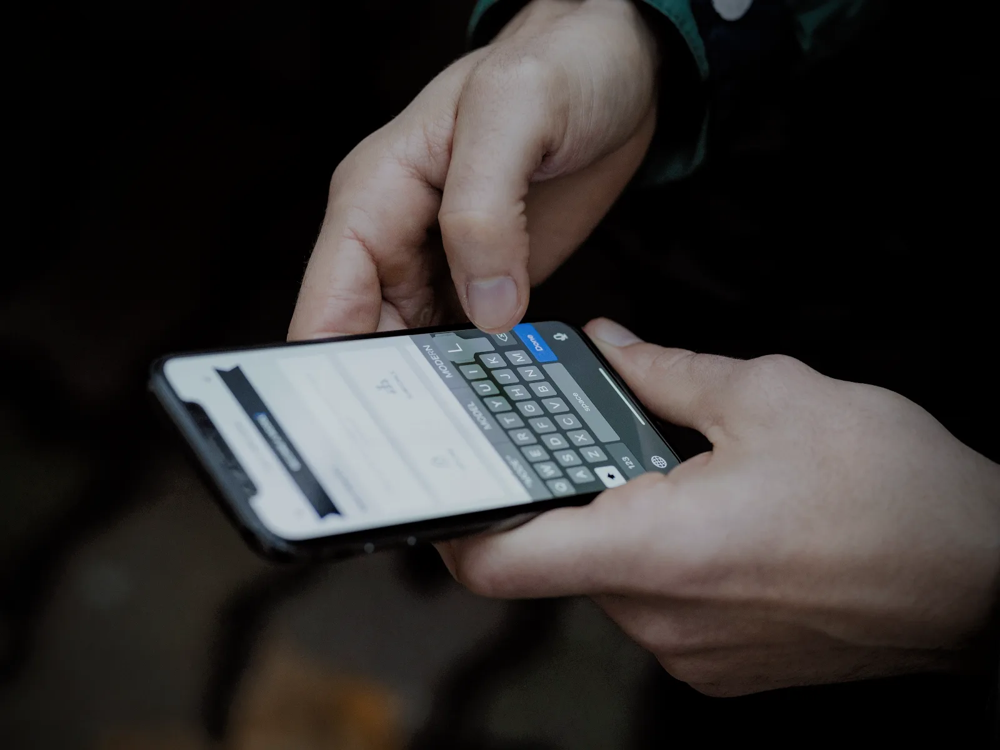

Accesibilidad
Diseñado para todas las manos.
Lector de pantalla, control por voz, texto a la medida de tus ojos y subtítulos en directo vienen de serie en auraOS. Y esta web respeta tus ajustes de movimiento, transparencia y contraste.
Pedir ayuda con la accesibilidad